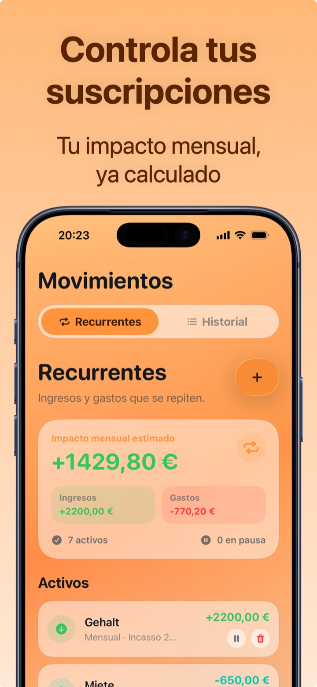

Gestionar suscripciones (y cortar las que no usas)
Las suscripciones son el gasto perfecto para pasar desapercibidas: importes pequeños, cargo automático, ninguna decisión activa. Por eso son también el mejor sitio para recuperar dinero: 10 minutos de auditoría valen a menudo 200-400 € al año.
El coste real: piensa en el año, no en el mes
El precio mensual está diseñado para parecer pequeño. Multiplica por 12 y todo cambia:
| Suscripción | Al mes | Al año |
|---|---|---|
| Streaming de vídeo | 12,99 € | 155,88 € |
| Música | 10,99 € | 131,88 € |
| Nube | 2,99 € | 35,88 € |
| Gimnasio | 39,90 € | 478,80 € |
| Total | 66,87 € | 802,44 € |
Y esta es una lista corta: añade apps, periódicos, cajas por suscripción, y el total anual supera fácilmente un sueldo mensual.
La auditoría en 3 pasos (10 minutos)
- Haz inventario de todo. Repasa los últimos 2 extractos y las suscripciones en la App Store/Google Play: anota cada cargo recurrente, incluso los micro-importes.
- Para cada uno pregúntate: ¿lo he usado en las últimas 4 semanas? No → cancela hoy (no «al final del periodo»: ahora, sigue activo hasta el vencimiento de todos modos). Sí pero poco → valora el plan inferior o el compartir en familia.
- Pon a los supervivientes bajo vigilancia. Regístralos en un solo sitio con su fecha de renovación: la mayoría de las suscripciones inútiles sobreviven porque nadie las ve nunca todas juntas.

El truco que las mantiene bajo control para siempre
Una auditoría puntual ayuda, pero las suscripciones vuelven a crecer (pruebas gratis que pasan a ser de pago, subidas de precio silenciosas). La solución es estructural: cada nueva suscripción se registra como gasto recurrente en el momento en que la activas. Así el total mensual está siempre a la vista, y la subida de 2 € ya no pasa desapercibida.
Cómo gestionar suscripciones con Crena
- Abre Transacciones → Recurrentes e introduce cada suscripción con importe y día de cargo (Netflix el 12, Spotify el 12, gimnasio el 1…).
- Crena muestra enseguida el impacto mensual estimado: total de ingresos recurrentes, total de gastos recurrentes y saldo.
- Al vencer, el cargo se registra solo en el mes: nada que recordar.
- ¿Quieres saber cuánto vale una cancelación? Pon en pausa la suscripción en Crena y mira cómo cambia el impacto mensual.
- Una vez al mes, repasa la lista: si no has usado un servicio, cancélalo y elimínalo (o ponlo en pausa) también aquí. El plan gratis incluye hasta 3 recurrentes; con Premium son ilimitados.
Preguntas frecuentes
¿Cómo encuentro las suscripciones que he olvidado?
¿Mejor cancelar enseguida o esperar al vencimiento?
¿Crena cancela las suscripciones por mí?
Prueba Crena gratis
Gastos en dos segundos, presupuesto mensual y estadísticas claras. Sin registro y sin vincular la cuenta.
Descargar enApp Store